|
English | 日本語
|
|
| 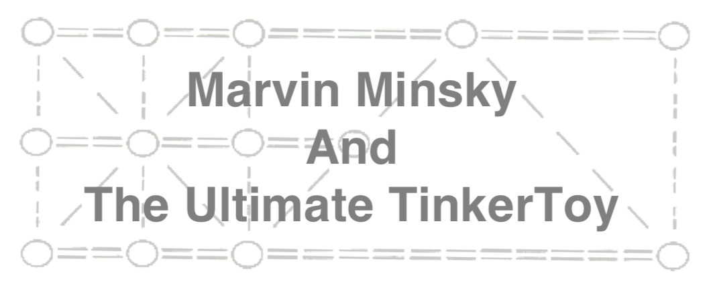 |  |
| マービン・ミンスキーと究極のティンカートイ アラン・ケイ(Alan Kay) |
プログラムにはかつて存在しなかっったものを作り出す力がある |
| (Loading dynamic contents |
まずはこの後書きを私の秘密の告白から始めさせてほしい。私はマービンが大好きだ！ここで私が現在形を使っているのに気が付いただろうか。確かに、彼の肉体はすでに旅立ってしまったが、彼と知り合うという幸運に恵まれたり、また講演やこの本のエッセイのような著作を読んだりした人の心の中では、マービンは今でも変わることなく生きているからである。さらに、彼の著作を読んだ人ならば、マービンのことを個人的に知っているように思えてくるのではないかと思う。それは、「アイディアの主、マービン」が読者の心の中で生き生きとしはじめるからである。マイク・トラバースがこの本のすばらしい序章で書いているように、マービンが唱えた「考え方のお約束」として、優れた考えを生み出せる人々を頭の中を内部化し、彼らが考え続けられるようにすることによって自分の考えもまとまるようにする、というものがある。私もこの「マービンと霊界交信」するというやつをこの文でやってみようと思う。
私はマービンが書いたこのエッセイが以前から特に好きであった。なぜなら、彼が信じていた大きな理想が子供向けに書かれているからである。その理想とは、コンピューティングというこの新しいメディアは、もし本当に理解されてうまく使われれば、子供がより強力な世界観を持ち、その世界で使うための心理的道具を持って成長していくための大きな助けとなりうるというものである。
このエッセイでは、彼は子供達に直接訴えかけている。なぜなら子どもこそがコンピューターを実際に触り、コンピュータとは一体なんなのかを見抜く可能性があるからである。一方、大人たちの中にはコンピューターを仕事にしているような人もいるが、たいていはコンピューティングの弱い側面を受け入れるだけに終わってしまうだろう。
強力なアイディアを学ぶ上での難しさは、我々はついつい「今いるところ」を出発点にしてしまい、新しいアイディアや新しいものを、既に知っていると思っている枠組みの中に当てはめようとしてしまうところにある。もしその新しいアイディアや新しいものが大きく異なるものである場合、出会った時に素通りしてしまうか、あるいは、それが持つ重要な意味を歪めてしまうことで、既に自分が持っている「個人的な宇宙(耳と耳の間にあるやつのこと)」に当てはめてしまう。マービンは子供たちが「僕にはこのアイディアがこれこれのものであると思うけど、でももしかしたらそうじゃないかもしれないし、もしかしたら全然思いもよらないようなものから作り出せるのかもしれないと思う」というような考えをいつでも持ってほしいと思っていた。(マービンはこの考え方のお約束を自分でとても上手に使っていたわけだ！)
マービンは、ごく単純な部品から驚くほど多様なものを作り出すことができるというティンカートイを比喩として使っている。ティンカートイの部品は、レンガや他の組み立てブロック、そして特に「コンピューターのやつ」の部品のように、ごくごく単純である。マービンは子供の頃からティンカートイでものを作るすばらしい名人であり、他の子供たちが発見したように、良いものが作れたという感覚がとても深い満足感を与えるということを知っていた。ここでの学びとは、なにかカッコ良いものを作ろうと集中するという楽しさからひとりでに得られるものである。マリア・モンテッソーリがだいぶ前に指摘したように、「遊びとは子供の仕事」なのである。
ティンカートイで遊んでいれば、すぐに部品そのものを超越する構造が生まれてくる。部品を適当にいじっていると何かができてくるわけだ。今回私は高層ビルみたいなものを作ってみた。

これだけでも、ティンカートイで一番重要なことは部品の詳細な性質ではない、ということに気がつくだろう。レンガ積みで言えば、部品であるレンガの性質のようなものだ。大事なのは、ものを作るためのアイディアを探り、それに息を吹き込むことである。タワーや、アーチや車やさらには新しい考えそのものを作っていけるのである。他の組み立てセットもそれぞれに基本的な部品とそれらのはめ込み方がある。一番強力なアイディアは組み合わせ方のデザインにあるのだ。
この強力なアイディアに関しては、以下のように考えて見るのが良いだろう。「より複雑なものになればなるほど、設計の違いが素材の違いを凌駕していく。」言い換えれば、日常的に手に取ったり考えたりする物の裏にも、しばしば組織や組み合わせ方に関する素晴らしい何かが隠れていることがあると言える。マービンがエッセイ1で書いているように「意味があるのは部品同士がどう影響しあっているのかであって、部品自身が何で作られているのかではない。」
我々の心もこのような組織なのだろうか？もしそうであれば、簡単な部品をコンピューター上で組み合わせることによって心を作り出すことができるのだろうか？
ティンカートイの部品で可動部を作ることもできる。例えば、おもちゃの車で押したり引いたりして動かせるものも作れる。荷台付きトラクターでも作ったらどうだろう。

荷台付きトラクターでも作ったらどうだろう。
ティンカートイが持つもう一つの強力なアイディアは、「ものいじり(tinker)」のところにある。遊ぶときにはトップダウンの計画どころか、まったく計画しないで始めても良い。部品で遊びながらごちゃごちゃやってみればよい。そのうちに、「タワー」「トラクター」のようなコンセプトの形が取れてくる。このことによって、具体的な部品のディテールと全体のコンセプトとの両方を見ながら作業を進めることができる。ティンカートイはアイディアを3次元でスケッチできるようにしてくれるのだ！
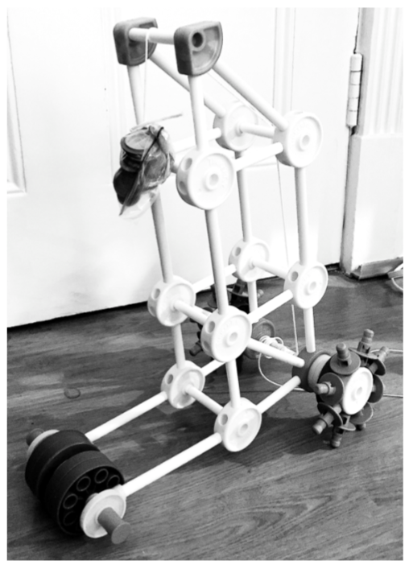この車に動力を付けて、ひとりでに動く「自動車」にしてみたいものだ。ティンカートイそのものには動力機構はないのだが、他のものを使って即興で作ることができる。例えば、高層ビルを車の上に乗せて、コインでも入れたビニール袋で重りを作って紐で結び、その紐を後輪の軸に巻きつけて回転させてはどうだろうか。
さて、この自走式の車には賢さ(smart)がないので、壁に当たったりテーブルから落ちたりしてしまうことに気がつく。この車になんらかの賢さをつけ加えることはできるだろうか。さて、賢さとはなんだろうか。

マービンはシーモア・パパートと何年も共同で、知性とはなにかについての考えを発展させる助けになるようなモデルを追い求めていた。彼らは伝統的なプログラミングとコンピューティングに囚われず、より良い部品、組織そしてデザインを使って「考えるもの」を作ろうとしたのである。
発想の出どころのひとつとしてサイバネティクスの分野があった。サイバネティクスはマービンが学生時代に探求したものである。他には、グレイ・ウォルターによるちょっとした知性を持っていた自律的なロボットのカメがあった。このロボットのカメは複雑な形状をした環境内で動き回ることができるというだけではなく、パブロフの犬のように条件反射を学ぶこともできた。マービンはグレイ・ウォルターのことを知っており、このカメのアイディアが、のちに子供のためのLogoのタートル幾何学につながったのである。

マービンとシーモアは、たいていの興味深いシステムはクロスコネクト(crossconnect)されていて、部品同士が相互依存関係にあって階層的関係ではなく、部品は単純な「もの」ではなくそれぞれがプロセスであるようなものであるということに気が付いた。マービンは、このエッセイを書いたのと同時期に、心がどのような仕組みになっているのかを探求した本『心の社会』を執筆していた。その本の冒頭で、マービンは以下のように書いている。
「心を説明するためには、心を持たないものからどのように心が作られるのかを説明しなくてはならない。そのような部品は、我々が『考えている』とは見なせないくらい小さく単純でなくてはならない。だが、そのような単純な要素、心を構成しているエージェント、とは一体なんだろうか。」
ここまで、部品の集合というだけではなく、全体としてなにかをできるティンカートイをいくつか作ってきた。ティンカートイでエージェントを作り、そのエージェントを組み合わせてより賢いエージェントを作ることは可能だろうか。

我々の自走車を賢くするためには、ある程度先の未来に後に何が起こりそうかを観測しつつ、もし大災害が起こりそうなら車を停止させるさせるような仕組みが必要である。まずはこの車に「探知センサー」をつけることが考えられるだろう。このセンサーが前方にある障害物と接触したら、センサーに接続されているブレーキが作動するようにすることが考えられる。もし後方にもセンサーを付けるなら、その「接触センサー」は、車の後部が何かに当たった時にブレーキを解除して、前に動いていくようにしたらよい。
ティンカートイが持つ強力なアイディアの3つ目は、「ものいじり(tinkering)」が、本物のエンジニアリング、数学、科学への入り口になることがしばしばあるということである。エンジニアリングとは、動けばよいというものではなく、より上手く、そしてより安定して、さらには美しく動くようにすることである。数学は、いうなれば「関係の関係」の科学であり、そこにある明晰な推論の鎖は「アイディアのエンジニアリング」のようにも感じられる。科学とは、我々が感知できる外界の現象と、我々が心の中で発明した表現法との折衝である。
ティンカートイで作れるものの限界を見たければ、ダニー・ヒリス(Danny Hillis)とブライアン・シルバーマン(Brian Sliverman)という、マービンの学生で今では有名なコンピューター科学者が作った「マルバツ(Tic-Tac-Toe)」の手を計算するコンピューターを挙げることができる。
このコンピューターでは、ティンカートイの発明者が考えたことすらないようなアイディアがたくさん使われていたわけだ。
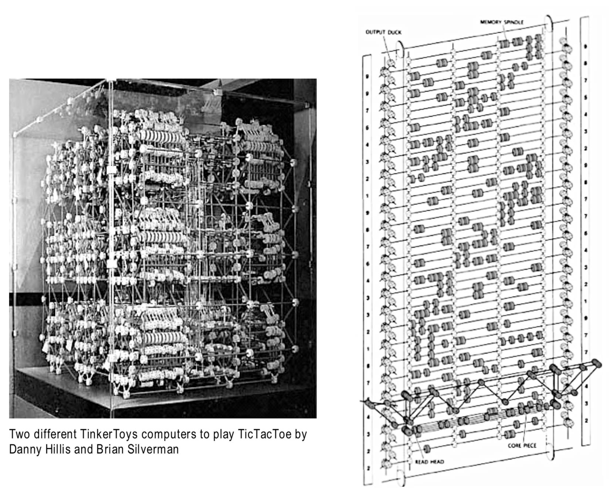ティンカートイが持つこの限界は論理的なものではない。論理的には完全なコンピューターをティンカートイで作ることもできるはずだが、実世界には制限があってそこまでのものは作れない。ティンカートイには誤差や摩擦のような問題があり、大きくしていくうちにがちがちになってどこも動かなくなってしまう。このような現実世界の問題を可能な限り最小化することを目的として、第二弾としてよりシンプルなティンカートイ・コンピューターも作られた。
子供はなにか良いことを思いつき、そしてティンカートイの部品が十分あって、そのアイディアを実際に作れたときには本当に幸せな気持ちになる。ただ、大抵の場合あるアイディアからはじめて何かを作っていると、もっと良いアイディアが湧いてくるものなので、もっとたくさん部品が欲しくなることだろう。
コンピューターの良いところは、特に今日では、どんなアイディアにを作るときにも部品不足にはならないということであり、それらのアイディアに基づいて何かを作ろうとする時には、間違いなくさらに素晴らしいアイディアが浮かんで来るということである。本質的に摩擦が全くなく、今日では我々の想像力以外に限界はない。
ティンカートイで子供がやっているのは、大人がやっている実際の仕事を知的な意味で正直な形に簡略化したものである。ここでは、子供が工学と美術工芸における設計と製作に携わっているということになる。設計という段階が省略されているわけではない。他の人が作った出来合いのものを使っていないからである(最近の組み立ておもちゃはそのようなものが多い)。過剰に作り込んだだものを子供に渡すのは、楽しみつつもがきつつ学ぶことよりも中身のない成功を優先していることになる。強力なアイディアとその力を本当に学ぶというのは、学んでいる人の心の中で起こる大きな変化、すなわち苦戦しながらも最終的になにかをつかみ、学ぶのが困難であるようなアイディアを流暢に使えるようになるという変化から来るのである。「学習困難」は決定的に重要なのだ。シーモア・パパートはこれを「ハード・ファン(Hard Fun)と呼んだ(6)。
グレイ・ウォルターのロボットカメに触発されたアイディアで、シーモアとマービンがLogoの世界にもたらした素晴らしいアイディアとは、子供がプログラムを書いて動かせるような機械のタートルを作るということであった。このタートルの頭脳は子供が書くプログラムであったわけだ。これにより、グレイ・ウォルターが数本の電線と真空管で絶妙に作り上げたものを、実体と深みがあるものとして子供の世界に持ち込むことができるわけだ。

物理的なタートルと子供用プログラミング言語という組み合わせは両者の良いところ取りであり、タートルに絵の描き方や他のことを教えるという多くの興味深いプロジェクトが作り出されることとなった。ここでは、子供達は本物の数学を学ぶ機会をお得な取引で得たわけである (パパートによる)。タートルが「賢くなる」ように子供が小さな脳みそを作ってやり、その脳でタートルが考えたり学習したりするというプロジェクトは、子供が生物学、心理学、自分自身そして思考ということそのものについて重要な知見を得られるものであった(エッセイ6とその前書きで、マービンとパトリック・ウィンストンがこれについて議論している)。
例えば、以下の図は簡単なLogoのプログラムである。いわば、「心のない動作の組み合わせで作られたエージェント」と言っても良いだろう。このエージェントは、グレイ・ウォルターの「放浪(wander)」という行動を司る。

このタートルは、前方に「少しだけ」進み、そして左右45度の範囲でランダムに向きを変える、ということを終わりなく繰り返す。
ここで、Logoの子孫として、ドラッグ・アンド・ドロップ式のプログラミング言語GPを使うことにする。GPは＜em>汎用(general purpose)という意味であり、大抵のウェブ・ブラウザーから簡単にアクセスすることができる(Marvin TinkerToys)。GPはLogoが提供していたものに加えて、便利で現代的も機能を持っている。以下の図は、グレイ・ウォルターの「放浪(wander)」プログラムをGPで記述したものである。

このプログラムは、「賢い」というよりは「ちょっと何かはしている」という表現が適切かもしれない。なぜなら壁や障害物の中に入り込んでしまうからである。そこで、「回避(avoid)」という行動を追加して、それが「放浪」と並行して走るようにしてみよう。回避プログラムは、触覚センサーを使ってもし何かに接触したら後ろに飛びすさるという動作をするものである。

2つのスクリプトは並行して動いているので、このタートルは前に動いているときも後ろに動いているときもランダムな方向転換をし続けており、タートルがいずれは障害物に当たらない方向を向くということに注目してほしい。
この図にある軌跡は、ずっと後になって作られたルンバ(Roomba)掃除機の動きを彷彿とさせないだろうか。ふたつの簡単なエージェントだけでも、いろいろなことができるものだ。
このプログラムはフィードバックという強力なアイディアを使っている。フィードバックはサイバネティクスの基盤にある概念の一つであり、マービンとシーモアが深く考えた題材でもある。フィードバックを使えば、未来に関する完璧な知識がなくても、予想されなかった問題に行き当たった時に、一般性のある修正機構として動作するのである。
ロボットも動物のように考えられるのか。
「ロボット」のプログラムとしてはこれでも完璧に理にかなっているといえるだろう。しかし、もし実際に生きている動物がどのように世界を見ているのかについて考えたくなったらどうだろうか。子供が動物の行動を理解するときの「知的な意味で正直な形」での説明はどのようなものだろうか。
さて、実は単細胞生物にも「少しだけ」思考能力があり、多細胞生物では神経系統があり、その接続性や機能はとても複雑なものにもなりうる。9歳から14歳の子供に、ティンカートイ的なやり方で、彼らが理解できる形で動物の思考について考えさせるにはどうしたらよいだろうか。
マービンがエッセイ１を書いた後の80年代中頃には、我々はこのような問題を考えるのにとても興奮したものだ。そして、小学生が都市や生物というような動的で複雑なシステムを自分たちで作ることを通じて、環境学やシステムという考えそのものについて学ばせるということに興味を持ったのである。子供にとって「知的な意味で正直な形」として扱えるようなものとして、そこで生まれる新しい考え方とやり方に子供が熱中できるようにしようとしたのである。
動物の行動と思考についての考察は、ジェローム・ブルーナーによる素晴らしい「Man, A Course Of Study (MACOS)」カリキュラムの導入部にも使われていた。このカリキュラムは、小学校5年生が知的に正直な形で文化人類学を教えるためのものである。(人間を人間たらしめているものはなんだろうか。より人間らしくなることはできるだろうか。)MACOSは、私の研究グループの実地研究をしていたロサンゼルスにある小学校でもすでに教えられていた (1)。この学校での共同研究はビバリウム・プロジェクト(Vivarium Project)と呼ばれていて、マービンもアドバイザーとして参加していた。
神経系統はニューロンと呼ばれる特殊な細胞からなっている。ニューロンには、感覚器からの入力を受け取り、信号を発生させるものや、感覚器と行動との間を取り持つものなどがある。動物はなんらかの障害物に触れたり、不愉快な匂いのする物質を嗅いだりすると大抵「回避(avoid)」行動をとる(人間もそうだ)。また、多くの動物は、緊急にとるべき行動がないときには、しばしば「探索(explore)」行動をとる(人間もそうだ)。

見た目もまた美しいウミウシは生態に関する研究も進んでおり、数万個のニューロンからなる神経系統を持ち、「放浪(wander)」や「回避(avoid)」を含めて多様な行動をとることが知られている。「回避」を司る神経系統を模式的に描けば次のようになるだろう。

図の中には、ウミウシの感覚細胞と接続している感覚ニューロンS、そしてSからの刺激を受けて動作する運動ニューロンMがあり、Mは「回避」のような実際の動作を引き起こす。
実際には、すでに起こっている放浪のような反応を抑制するような神経接続もあり、苦痛に対する反応を可能な限り高速に処理していると思われる。ただ、今回はそのような抑制的接続のことは除外して考えてみる。

我々人間にも、ウミウシのものとおなじくらい単純な、感覚神経から運動神経への経路が多数ある。例えば、腕の皮膚に感じた痛覚が、同じ腕の筋肉の反射運動を起こしたりするわけだ。この反射運動は脊髄で処理され、痛みの信号が脳に届くのはずっと後のことになる。
これを踏まえて、タートルを動かしていたスクリプトを書き直し、もう少し生物学的に理にかなったものにしてみよう。そのために、模式図を二つの部分に分けて考えてみてもよい。

第一の部分は、「感覚のプロセス」であり、感覚器が何かを感知したら、信号を「発火」させる。第二の部分は、「運動のプロセス」で、接続されている神経繊維から信号を受け取ったら、筋原繊維を収縮させて「回避」動作を引き起こす。ここで、この模式中の部品を表す画像をGPにドラッグ&ドロップして、それぞれにスクリプトを追加することができる。いわば、それらをGPの中で簡単に扱えるようなティンカートイの部品にしたわけだ。
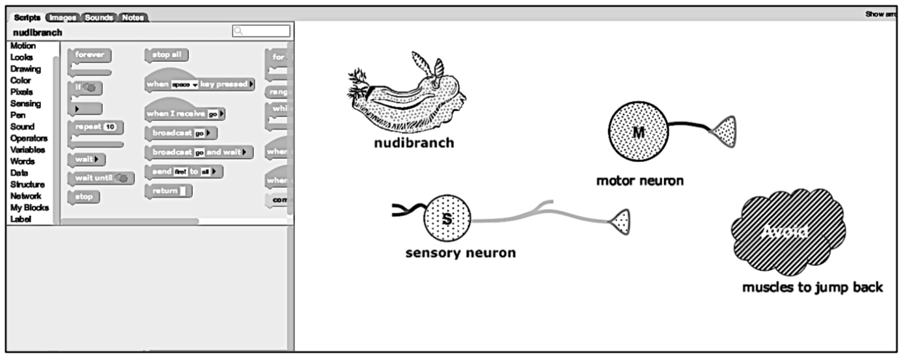ここで、部品を動かしてそれぞれが接するようにしてみよう。
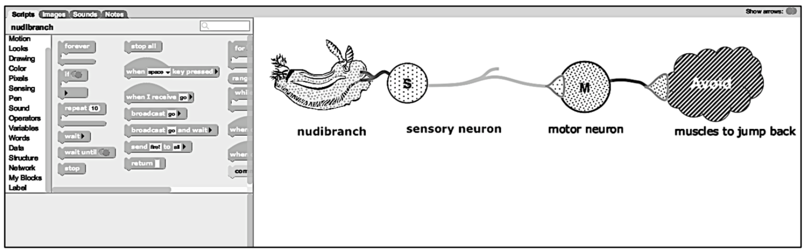そして、それぞれの部品にスクリプトを追加して、ウミウシが何かにぶつかったことを感知したという信号が、感覚神経を通じて運動神経に伝わり、それが飛び退る動作を引き起こす筋肉に伝わるようにできる。
このウミウシにも、タートルでやったのと同様に環境の中を動き回ってもらいたいものだ。ただ、繋がっている神経が切れてしまっては困るが。このような動作もスクリプトで書くのは簡単である。また、ラバーバンドの線を引いて、ウミウシの絵が神経系の図と関連があることを示すようにしよう。さらには、障害物も作って、ウミウシがぶつかったかどうかを調べることにする。
書かれたスクリプトは以下の図にあるようなものとなった。ウミウシの絵も上から見下ろしたものに変えたほうがよさそうだ。以下のプロジェクトを起動し、ウミウシの絵をクリックしてみよう。もしスクリプトを変更したければ、"See Inside"でプログラムを見ることができる。(注意:モバイル機器では起動に時間がかかることがあります。)
一番左下にあるスクリプトは、「ウミウシの体が何かに当たったら感覚神経に信号("I've Been Bumped")を送る」、と書かれている。感覚神経は”touched”という名前の変数に格納されている運動神経に"fire!"信号を送る。同様に、運動神経は"fire!"を筋肉に送り、飛びのくという動作(Avoid Response)を元のウミウシに送る。これで、感覚から動作までのウミウシの動作のシミュレーションが完結するわけだ。プログラムを試してみるとちゃんと動くようだ。できたところでスクリプトを画面から隠し、もっと多くの障害物を置き、作った生き物を解き放ってみよう！
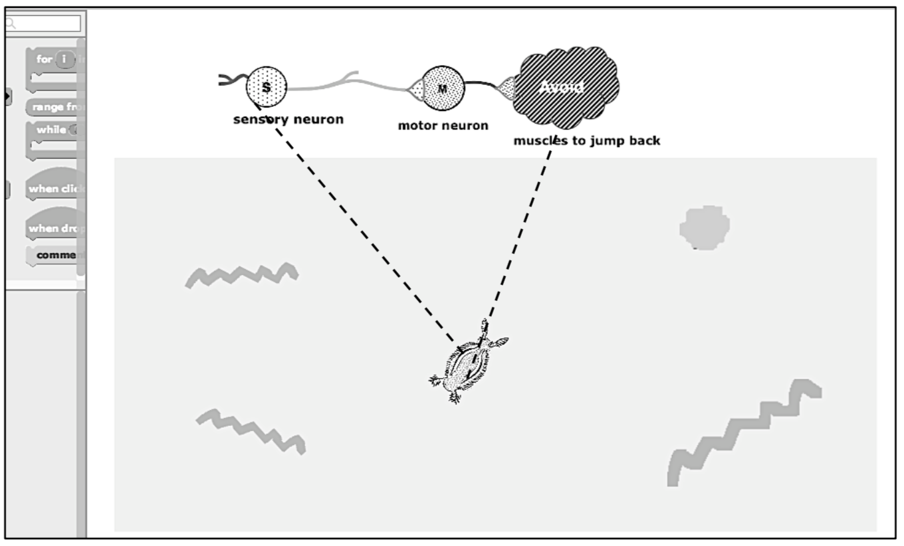 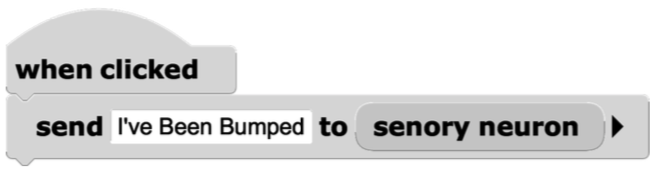最後に、マウスクリック(軽くつっつくようなものかな？)にも障害物に当たったのと同じように反応させりよう。
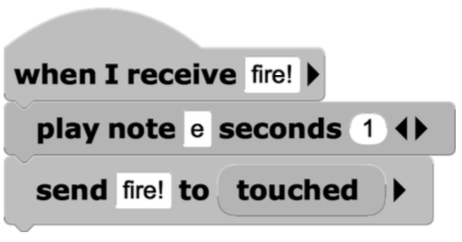この例をデバッグしているうちに思いつくような楽しいアイディアは、それぞれのスクリプトが実行された時に、それぞれ別の音色の音を鳴らすようにすることである。これは(それぞれの音が1秒ずつなるようになるので)プログラムをゆっくり実行させることにもなり、また順番に実行されたスクリプトの列がメロディーを奏でるようにもなる(マービンがみたらとても喜んだだろうね)。例えば、運動神経のスクリプトはこのようになる。
動物はどうやって学習するのか？
ここまでは思ったように動いているようだが、グレイ・ウォルターのカメや我々のウミウシのシミュレーションは、もし床(海底)に穴があったら落ちてしまうことだろう。グレイ・ウォルターであれば、カメのところに行って、足で軽く蹴り「回避」の動作が起きるようにしたことであろう。しかしながら、彼はホイッスルの音のような信号と「回避」行動とを関連付けできるような「もっと賢いカメ」を作ったら楽しいだろうということに思いいたったのである。つまり、ホイッスルの音が障害物への接触を意味することを学習させるということである。
彼は、ホイッスルを吹くのと間隔を空けずにタートルを蹴るということを何度か繰り返したときに、徐々にホイッスルが障害物への接触と同じであることを学習する仕組みを考案した。この仕組みでは、蹴るのとホイッスルとが十分に近い時間間隔で発生し、そのような組がある程度の時間の間に何度か起こったとしたら、しばらくの間ホイッスルの音がすると「回避」行動が取られるようになる。さて、我々のウミウシでも同じような動作をさせてみようではないか。
動物が条件付けされやすい理由の一つには、生物は成長中にしばしば過大に発達をするという段階を踏むからである。この場合では、神経系統の成長時には一旦必要以上の神経接続を作るという段階を経る。つまり、遺伝子そのものには学習機能はないので、進化過程における初期の「発明」として一旦細胞を過剰増殖させ、できた構造をテストし、その後で役に立っていると見なされた細胞だけを残すという手段がとても有効だということだ。(多くのアイディアを出した後でデバッグするという強力なアイディアの方が、最初から一つだけ素晴らしいアイディアを出していこうとするよりも効果的という話に似ているとも言える。)もし成長に伴う経験に基づいて後から接続を強化したり弱めたりできるのであれば、遺伝子そのものを書き換えることによって学習することが難しいことでも、個体の発達中に適応していくことができる。
巻貝やナメクジでは(我々の美しきウミウシの仲間だ)、多くの匂いを感じる感覚細胞や貧弱な明暗を感じる細胞から、弱いながらも信号が送られてくる。そこには多くの介在ニューロンIが、異なるなる感覚細胞から信号を受けており、介在ニューロン同士の間にも存在している。そこからは多くのシナプス接合部へと信号が伝達されており、そのようなシナプスには、図のように目からの信号を受け取っているものもある。
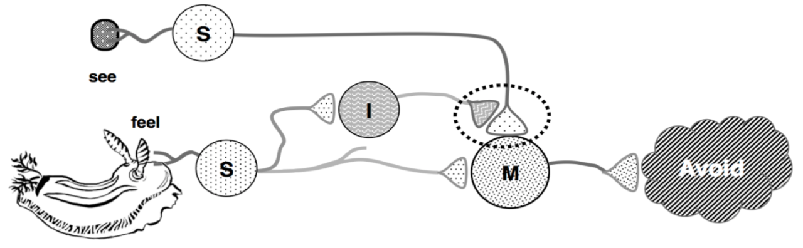もし光が当たっただけであれば、ウミウシは特に反応は見せない。しかし、もし光を当てるのと同時に触覚器を触るということを繰り返していると、ある時点で、光さえ当てれば「回避」の反応が見られるようになる。いわば、「光刺激」が「接触」を意味するということを学習したわけである。このような学習結果は数時間から数日維持される。この種類の学習は、読者の皆さんも、パブロフの犬がベルの音と餌とを関連づけて、ベルが鳴ると唾液をたくさん流したとという話をご存知だろう。また、マービンが博士号の研究として行なったのも、このような学習のモデルを作るということだったのだ。
我々が作っているGPウミウシでは、光刺激よりも音声の方が扱いやすい。そこで、このウミウシが、ちょうどグレイ・ウォルターのカメと同じように、音が鳴ったら「衝突」だということを学習できるかどうか試してみよう。

条件が比較され、学習と記憶が行われるのは、感覚神経と運動神経を繋いでいる「ふくらみ(シナプス前細胞)」においてである。これが何かに「気づく」ところであり、側面からの信号がある時にシナプス結合の強度を高めるように変化するところである (2)。
ここでちょっとスケッチをして、シナプス前細胞の中がどのような仕組みになっているのかについて考えをまとめてみよう。ここでは、グレイ・ウォルターがとったアプローチを借りてみることにする。
もし、触覚刺激と音声刺激が一瞬で消えていってしまうものであれば、それらが一緒に起こったということを認識するのは難しいだろう。ただ、もしどちらかの出来事を短期間でも覚えていられるのであれば、二つの刺激が同時に起こったかどうかを調べるのははるかに簡単になる(今回は、音声刺激があったことを覚えるようにしよう)。
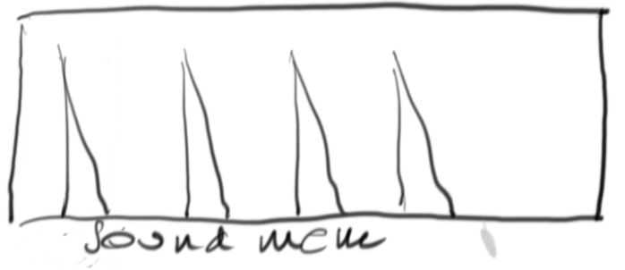私は時間経過と共に変化する動きを図にして考えるのが好きである。音があったことを覚えるには、音に応じてメモリに強いスパイクが記録され、それが素早く減衰するようなものを考えてみよう。ただし、ある程度の間は情報が残るようにする。
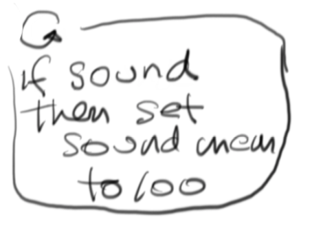ここで、メインとなるプロセスを表現するスクリプトを殴り書き(scrawl)してしまおう(紙の上ではグラフの左側に描いたが、紙面の都合でここでは下に置かれている)。これは音が聞こえたとときに、音メモリ(sound memory)変数を(適当に選んだ上限である)100にするというスクリプトである (3)。メモリにスクリプトを書くことによって、メモリの内容が時間経過につれて自動的に減衰するようにし、上に描いた絵のような振る舞いをみせるようにする。
 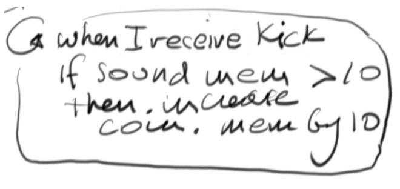
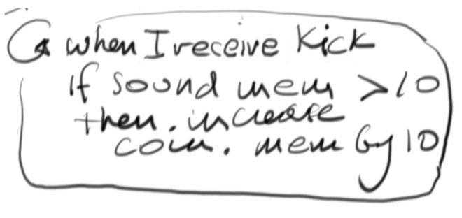
もし、二種類の刺激は関連しているということを、たまたま一度同時に起こっただけで決めつけてしまったとしたら、我々はとても迷信深いということになってしまう。その代わりに、二つの刺激が短い時間になんども連続して同時発生した、ということを記憶するようにしたい。これを実現するためには、同時発生メモリ(coincidence memory)というもっとゆっくり減衰するメモリを作り、刺激が同時発生した時にメモリの値を少しだけ増加させるようにしたら良いだろう。少しだけ増加させることにより、短期間に連続してイベントが発生した時は階段状のグラフとなる。同時発生メモリを記述するscrawlscriptもとても簡単である。もし触覚器からの入力(kick)があった時には音メモリの内容を調べ、もし値が10よりも大きければ、音と触覚が同時に起こったということで、同時発生メモリを10増やす。

刺激の同時発生イベントが立て続けに起こる場合には、メモリにしまわれている値が上昇していく。もしその値が適当に選んだ"80"というしきい値を超えた場合には、この「同時発生は偶然ではない」と判断し、その情報をより長期的な学習メモリ(learning memory)に格納する。
このscrawlscriptは多分一番簡単だろう(もし同時発生メモリが80より大きければ、学習メモリの値を100にする)。
これらの図をみると、どのメモリもみなよく似ていることがわかるだろう。違うのは減衰の速さだけである。

ここで面白いのは(いわばぶら下がったニンジンのようなもので、このようなメモリを実際に作りたくなる)、「条件反射」そのものも、単純なスクリプトで実現でいるということだ。つまり、学習メモリになんらかの値(10)がある時に聴覚刺激だけが発生して音メモリの値が80を超えたら、"fire!"信号を運動神経に送るだけである。

これら全部を「ふくらみ(シナプス前細胞)」の絵の中にまとめて、「アイディア全体の地図」としてみよう。
ここで得られる大きな知見は二つある。一つは、このように動作するメモリがあれば実際に動かすのは非常に簡単であるということであり、もうひとつはこれら3つのメモリは事実上同じで、ただ減衰率が違うだけだということである。
このスケッチは、意図したことの地図、つまりなにをしようとしているのかに関する大づかみな覚え書きであると言える。ティンカートイを使ったりスケッチをしたりという大まかな作業のしかたをすると、作りたいと思っていることの、手でつかめるようなビジョンとして扱うことができるようになる。トップ・ダウン式では定義できないかもしれないが、未知の領域を探求して、可能性を探すことができる。
メモリの材料
メモリを作るには、値に変更を加えたり、値を調べたり、値をゆっくりと減少させたりできるなにかがあればよい。
何だか水洗トイレのようだと思われないだろうか？流しだと思っても良い。溜まっている水の高さがメモリにしまわれている値ということになる。
ここでは水位を測る浮きが必要である。水位が高くなったら何かを起こしたり、あるいは溢れる前に入ってくる水を止めたりするときにも使えるわけだ。
何かをモデル化しようとしている時には、瑣末なディテールをにとらわれないことが大事である。そのためには、まずはそれぞれのアイディアの本質(エッセンス)を捉えることに集中し、その下位にあるディテールのことを気にしないことが役に立つ。
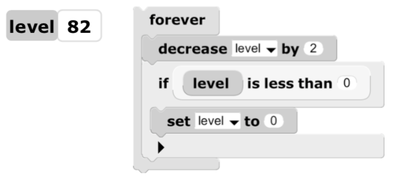例えば、ここで流しのエッセンスは、溜まっている液体の水位を表す数値一つと、栓を開けたかのように水位を下げていくプロセスとで表すことができる。そのプロセスは、ある割合で時間に応じてその数値を減少させ、0になったところで止まるというものである。

GPを使ってこれを実剣するためには、「level」という名前の変数を作り、栓を表すスクリプトを作って値が0未満にならないようにする。一目でわかるように、もし減衰率をあらわすrateという変数を定数"1"の代わりに使えば、より柔軟性のあるプログラムを作ることができる。

グラフを描くのも簡単である。
GPのオブジェクトはペンを持ったタートルでもあるので、時間に従うグラフのエッセンスを作ることも簡単である。小さな「点オブジェクト」を作り、グラフを書く長方形を用意する。グラフを書くためのスクリプトは、それぞれの時間刻みで、点オブジェクトをx座標に定数を足すことにより右に一定量だけ動かすとともに、y座標をlevelの値とすればよい。
ついでに、流しの絵をアニメーションするのも楽しいだろう。このアニメーションのエッセンスは、levelに応じて高さの変わる長方形で表現できる。

これで、「アイディア地図」で必要とされていたメモリを、ティンカートイ式に手っ取り早く作ることができた。このように作ったものをGPの「部品(part)」(訳注)に「格上げ」し、その複数のオブジェクトからなる部品のインスタンスを必要なだけ作れるようにする。
ついでに名札も付けて、メモリを画面上で表示する時に見たいものを「ひとまとめ」にする。
これでしばらく遊んでいると、改良点として、水ための見た目を単なる長方形ではなくて、容器のような形にしたり、グラフを書くタートルが右端から左端に自動的に戻ったりする機能を付け加えたくなる。
これらの改良により、この「メモリ部品」の見た目は、アイディア地図に描いておいたようなものになる。以下のプロジェクトを起動し、画面をクリックするか、スペースバーを押すか、音を出してメモリのレベルを変えてみよう。
コンピューターが持つ強力な機能には、複数の部分から作られたものを、全体で一つの新しい部品として扱い、その部品の実例(インスタンス)を制限なく作れることがある。例えば、この文章で使われている文字は文字部品のインスタンスであり、「あ」の文字は、「あ」のイデアとGaramond(要:実際のフォント名に変える)フォントの形の両方のインスタンスである(4)。
ウミウシにも学ばせよう
さて、ここまでティンカートイ式に作ってきたメモリ部品のインスタンスを3つ作って、スクリプトを書いていくことにしよう。

スケッチした地図を見直して、4つの簡単なエージェントで学習するプロセスをどのように作るつもりだったのかも思い出してみる。
すでにscrawlscriptを書いておいたので、ここではそれらをGPのスクリプトに翻訳するだけで良い。「地図」を条件反射の学習プログラムに変えてみよう。

上の図にある最後のスクリプトは見た目は単純だが、実はとても奥深いものである。つまり、衝突があった時に音量が十分にあり(警告音のようなものか！)、そして長期学習メモリにまだ値が残っているなら、音声刺激を衝突刺激の代わりだと思って、回避行動をとるようにする、ということだ。言い換えれば、音が衝突の記号となり、音が鳴るだけで実際の障害物がなくても逃げるようになる。
以下のプロジェクトでも、音を立てるだけではなく、画面をクリックするかスペースバーを押すことによって音声入力の代わりとすることができる。ウミウシの動きを注意深く観察し、障害物に当たる直前に音声刺激を与える必要があることに注意してほしい。
このプログラムを作ることにより、数少ない簡単な機構を組み合わせることによって、感覚、判断、学習、記憶という要素からなる条件反射を実現できることがわかる。マービンは、「心というものがいかに心を持たないものから作れるのか、考える力を持っているとは思われないような小さな部品から作れるのか」ということを示そうとしていた。我々がここでやったのは、ごく簡単な例ながらも子供が実際に試せるようななものを作るということである。これを作るためには電気で動くデジタル・コンピューターが必要ない。流しか風船、そしてティンカートイを使っても作れるだろう。あるいは、マービンが1954年にプリンストンで博士課程の仕事の一部として作った機械でもできたはずである。この機械は冗談めかしてSNARCと名付けられており、40個のニューロンを使った最初の「ニューラル・ネット」マシーンだった(5)。それぞれのニューロンは我々がつくったメモリと同じアイディアに基づいて作られていたのである。もちろんティンカートイや水洗トイレのタンクやコンピューターは使われていなかったが、当時の単純な電気的な仕組みと機械の部品で作られていた。
「いじりまわし」と対比されるものとして、深い発明と発見という、天才と呼ばれる人にとってさえもとても難しいものがある。そのため、過去の偉大な知性が成し遂げたことを学ぶことはアイディアや技芸を進歩させるためのとても強力なアイディアである。表面上は知識と創造性とは相容れないものであるようにも見えるが、ピカソがとった解決法は以下のようなものであった。「ルールをプロのように学べば、それを芸術家のように破ることができる。」グレイ・ウォルターが1940年代に、数本の真空管だけで条件反射を作ろうとした時に取ったアプローチがここでとても参考になる。つまり、技術に関する知識を「ドグマ」ではなく「材料や道具」として捉えれば、それは創造性に反するものではないということである。子供は学びのためには自ら発見する必要があるが、発見をするための助けもまた必要としている。子供が学ぶ環境には両方ともが必要である。
人間のもっとも人間らしい思考は条件反射よりははるかに複雑である。しかし、我々の脳で行われている思考も、その多くは過去に形作られた単純な条件反射や繰り返し観測された条件の一致による連想を使っている(6)。心的外傷後ストレス障害(PTSD)の悲劇も、大きな音が危機への対応と関連づけられたことからきている。この条件から抜け出すのが難しいのは意識的な高次の思考が介在しないで起こっている現象だからであり、また条件づけを解除するのが、条件づけされるよりも難しい理由となっている。
高次の思考ができるように学習しているにも関わらず、我々が「考えているつもり」の結果として取っている行動のいかに多くが、「きまぐれでまったく無関係な信号」を意味のある記号として置き換えてしまった結果であるかということには驚かされる。お話や劇はこのことに頼っており、さらには宗教や論文だけでなく、科学における数学の利用もまたこのことに依存している。多くの人が見せる、「旗に火をつける」ことに対する反応や、仕事の肩書きや階級に対する態度にも見て取れるだろう。つまり、単純な生物が(意味のあることとして)見せる学習行動と気味の悪いくらい似通っているのである。
そのような間違った信号の置き換えが危険な結果を招きかねない時に意図的にそれを避けるように学習することはできるのだろうか。
(6) ダニエル・カーネマンは著書「Thinking: Fast and Slow(邦訳: ファスト&スローあなたの意思はどのように決まるか?) 」で、非顕在的で比較的速い思考が、人間でもどのくらい行われているのかに関して大きな視点から論じている。↑
究極のティンカートイと究極のシンカートイ
ここまでの説明で、デザインとプログラミングによって「何もなかったところにものを生み出す」ことができるという子供の習性と力を示す比喩として、なぜマービンがティンカートイをエッセイ1で持ち出してきたのかがわかるだろう。人はものが欲しいから作るのではなく、学びたいから作るのである。最初は自分の手と目で触れて見て、そして一歩下がって深く考える。つまり「ものいじり」から「考察」へというわけである。ここでコンピューターを使うことにより、手でいじったものや考察したものに動的な振る舞いを付け加えることができ、質的により深く考える材料を得ることができる。ティンカートイ(TinkerToys)ではない、「シンカートイ(ThinkerToys)」なのだ。
コンピューターを使ってデザインしプログラミングをするときには我々はマービンの系譜につながる良き伝統を辿っていることになる。それはスケッチパッド(Sketchpad)にはじまる近代的な対話的グラフィックスとコンピューティングの発明である。この発明は1962年にアイバン・サザランド(Ivan Sutherland)によってなされたが、マービンはクロード・シャノンと共にサザランドの指導教官を務めたのだ。
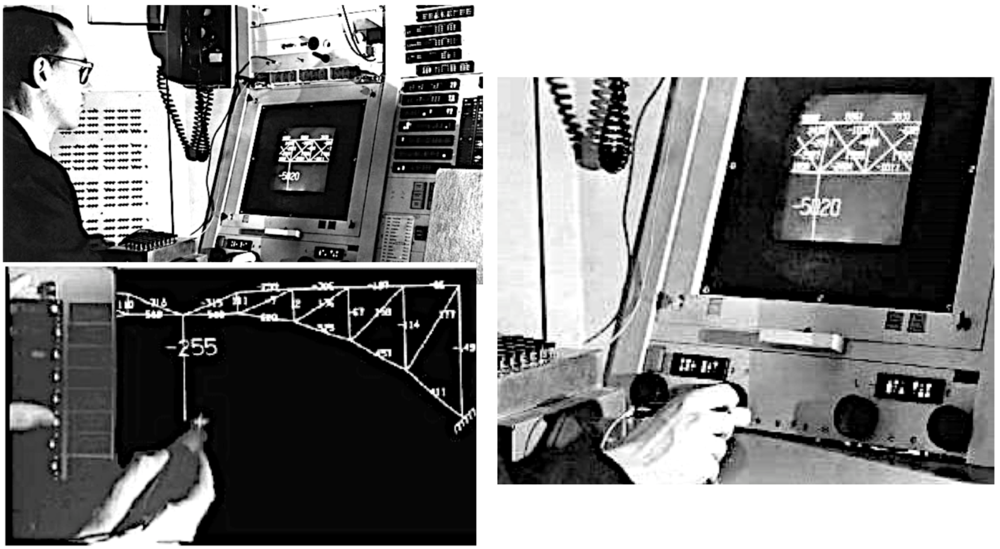スケッチパッドに今日のパーソナル・コンピューターを見て取ることができる。スケッチパッドは、55年前の時点でこのラフな橋のスケッチを歪みと荷重を計算する動的なシミュレーションに簡単に変換し、それを元にグラフィックスの表示を変えることができた。今では、子供が動物の神経細胞が連結している構造図を描きながら、それを元に、動物の行動をシミュレーションすることができる。スケッチパッドは、フットボール場ほどの大きさを持っていた当時のスーパー・コンピューター上で動いていた。今日の子供は、はるかに大きな計算資源をたかだか数百ドル程度で、スケッチパッドのディスプレイと同じくらいの大きさの個人用ラップトップで使うことができる(フットボール場くらいの大きさだったものよりもずっと速いコンピューターが、ディスプレイの裏側に収まってしまっているわけだ)。

マービンはラップトップ・コンピューターと子供のコンピューターの誕生にもある役割を果たした。私が1968年にユタ大学の大学院生だったとき、マービンが近くで開かれていた教育とコンピューターに関する会議でわくわくするような講演をしたのだ。その内容は、シーモアとマービンの考えていた、子供に強力なアイディアを学ばせる方法についてのものだった(7)。
その年の後半に私はシーモアとシンシア・ソロモンがボストンの郊外でLogoを教えていた学校に行った。そこで彼らがやっていたことを見て、私は吹っ飛ぶほどの衝撃を受けたのだ。今でも思い出すだけで同じ衝撃を感じるくらいである。
ユタに帰る飛行機の中で、すべての年齢の子供たちのためのパーソナル・コンピューター:創造的思考のための動的なメディアの絵を描いた。これはスケッチパッドやLogoそして当時の研究コミュニティにあった他のアイディアに触発されて生まれたのである。現在のパーソナル・コンピューター、ラップトップ、タブレットはここから生まれてきたのである。
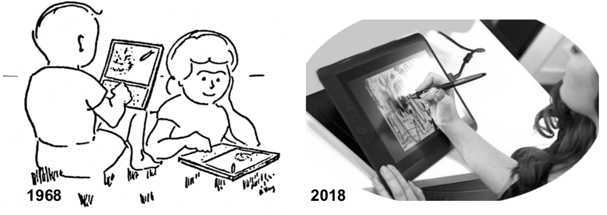2018年に生きる子供達は、条件反射の仕組みをその実行可能なモデルをプログラムすることによって、模式図を実際に動かして学ぶ。そのような子供たちが使っているアイディアや技術は、アイバン、マービン、シーモア、シンシアや当時の他のパイオニアたちの仕事からの直接の子孫なのである。この文章で取り上げた例題で示したかったのは、コンピューターが持つ、特に子供達にとって最も重要なこと、すなわち既存のメディアを模倣する段階を超えて、いかに新しく動的なアイディアの表現を作り出したり、複雑なシステムを理解したり、科学的な理論のモデルを作ったり、コンピューターなしでは存在できない芸術や作品を作り出したりするという可能性である。
言い換えれば、コンピューターとは、アイディアが演奏できるような楽器である。コンピューターの重要性は、人類が理解すべき強力なアイディアの多くが、コンピューターを通じてこそ良く表現でき、良く学べるというところにある。我々は人類が築き上げてきた強力なアイディアを子供達に伝え、コンピューターを洞察にあふれた形で利用することにより、子供達が学べること、どのように学ぶのか、そしてどのくらい良く学べるのかということに質的な違いをもたらすよう助けなくてはならない。
さて、読者の皆さんは子供達がコンピューターを使って何をするべきだと思われますか？
謝辞
ジョン・マロニーがGPでコンピューター上での例題を作成することに関して広範な助力を惜しまず、またこの文章にも丁寧な批評をしてくれたことに感謝する。大島芳樹も貴重な意見を寄せてくれた。動物の心の子供向けモデルに関するパイオニアであるマイク・トラバースにも感謝する。文章の推敲と批評を注意深く行ってくれたK-5の教師ジャン・ラバルにも感謝する。なによりも、我々と共に仕事してくれた、多くの献身的な先生方全員に感謝したい。我々は皆さんからたくさんのことを学ぶことができた。
最後に、私のお気に入りのマービンのエッセイの後書きを書くように誘ってくれたシンシア・ソロモンと萧潇に感謝する。長年の(何十年の)友人や同僚と共に、最も愉快で最も影響力のあったメンターを称え世に紹介するという仕事ができたことを嬉しく思う。本書を作るのはとても楽しかった。
参考文献
- Hal Abelson, Andy diSessa, Turtle Geometry
- Jerome Bruner, Towards a Theory of Instruction
- ________, The Relevance of Education
- ________, MACOS Occasional Paper, ....
- Dewdney, The TinkerToy Computer
- Donald Hebb, The Organization of Behavior
- Peter Dow, Schoolhouse Politics
- Danny Hillis, The Pattern On The Stone
- Daniel Kahneman, Thinking: Fast and Slow
- Eric Kandel, et al. Principles of Neural Science
- Alan Kay, Microelectronics and the Personal Computer, Scientific American, Sept 1977
- ________, Networks, Computers, and Education Scientific American, Sept 1991
- ________, Adele Goldberg, Personal Dynamic Media, IEEE Computer March 1977
- David Macauley, Cathedral
- ________, The Making Of The Book “Cathedral”
- John Maloney, GP http://gpblocks.org
- Marvin Minsky, Preface To Logoworks
- ________, The Society of Mind
- ________, Form and Content in Computer Science, Turing Award Lecture, 1970
- ________, Computation: Finite and Infinite Machines, 1967
- Seymour Papert, Teaching Children to be Mathematicians vs Teaching Them “Math”
- ________, Cynthia Solomon, 20 Things To Do With A Computer
- ________, Mindstorms 1980, later thoughts about children and computers
- Brian Silverman, Logo MicroWorlds Reference Manual
- Cynthia Solomon, book
- Mike Travers, theses ...
- Grey Walter, An Imitation of Life, Scientific American, May 1, 1950
- ________, A Machine That Learns, Scientific American, Aug 1. 1951
- ________, The Living Brain, Norton, 1953
- Norbert Wiener, Cybernetics
- Patrick Henry Winston, Learning Structural ... from Examples,
- ________, Introduction to Education and Psychology (chapter, this book).